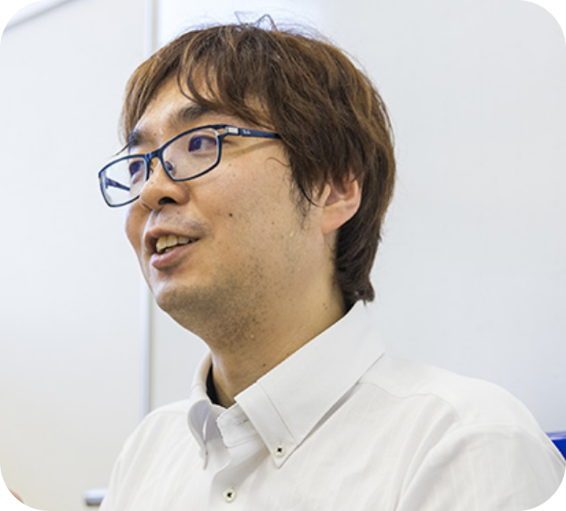

Osaka Metropolitan University
Manato Fujimoto
Associate Professor · Ph.D. in Engineering
Graduate School of Informatics, Osaka Metropolitan University
Smart Platform Research Group
I study ubiquitous computing and sensing systems that connect the physical and digital worlds, with a focus on understanding daily activities and supporting people's lives.
- manato [at] omu.ac.jp
- Address
- 3-3-138 Sugimoto, Sumiyoshi-ku, Osaka 558-8585, Japan

Osaka Metropolitan University
About
I am an associate professor in the Graduate School of Informatics at Osaka Metropolitan University and a member of the Smart Platform Research Group. My research spans ubiquitous computing, wireless networks, sensing technologies, and elderly monitoring. I received my B.E., M.E., and Ph.D. in Engineering from Kansai University in 2009, 2011, and 2015. Before joining Osaka Metropolitan University in 2022, I worked at Nara Institute of Science and Technology and Osaka City University. I was also a visiting scientist at RIKEN's Center for Advanced Intelligence Project (AIP) from May 2018 to March 2026.
- Ubiquitous Computing
- Wireless Sensing
- Activity Recognition
- Healthcare & Well-being
Recent News
View all news →- One paper accepted for presentation at CNSM 2026.
- Two papers accepted for presentation at ISMICT 2026.
- A paper accepted in the International Journal of Informatics Society.
- A poster paper accepted at UbiComp / ISWC 2026.
- A paper accepted in Applied Gerontology.
- An invited paper accepted in IEICE Transactions on Communications.
Appointments
- Apr. 2022 — Present
- Associate ProfessorGraduate School of Informatics, Osaka Metropolitan University
- Oct. 2021 — Present
- Associate ProfessorGraduate School of Engineering, Osaka City University
- Apr. 2015 — Sept. 2021
- Assistant ProfessorNara Institute of Science and Technology
- May 2018 — Mar. 2026
- Visiting ScientistCenter for Advanced Intelligence Project (AIP), RIKEN
Education
- Mar. 2015
- Ph.D. in EngineeringGraduate School of Science and Engineering, Kansai University
- Mar. 2011
- Master of EngineeringGraduate School of Science and Engineering, Kansai University
- Mar. 2009
- Bachelor of EngineeringKansai University
Selected Award
2023
IPSJ / ACM Award for Early Career Contributions to Global Research
Advanced Ubiquitous Computing System for Realization of Society 5.0